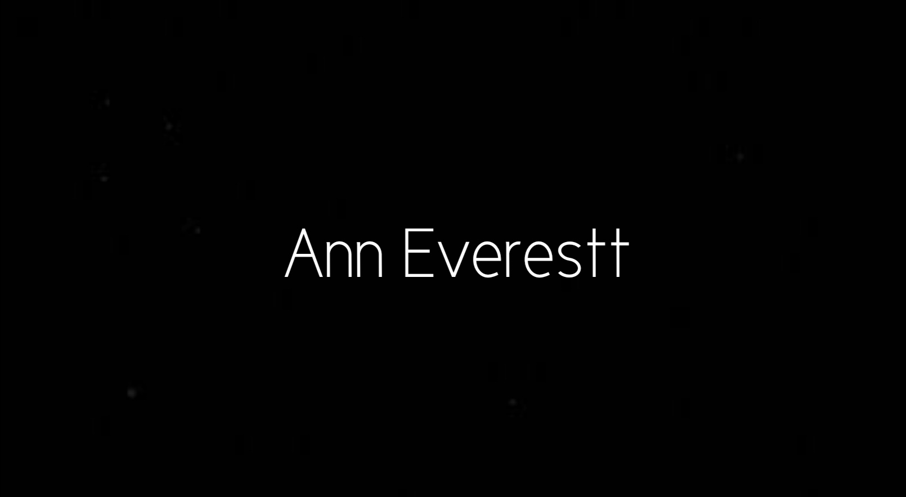
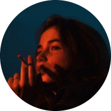

| 
|
Sitio Personal
Creado para la difusión de escritos propios
Venta de libros en línea
|
Ann Everestt
Escritora
mexicana autora de tres libros en desarrollo.
Soy una ingeniera, artista y escritora mexicana, radico actualmente en la
Ciudad de México, tengo 27 años de edad y me encuentro en proceso de tres
libros: Catarsis, El asco y Asíntota. Así como también la elaboración de retratos,
en lineart, blanco y negro y a color. Vísita mi sitio web para obtener más información.
Libros y enseñanza
- "Catarsis", 2015-2022:Este ha sido de mis primeras obras escritas, reúne todos los textos que hablan
sobre emociones, sentimientos como la tristeza, la esperanza, melancolía, etc. Es una purga
emocional.
- "El asco", 2022: Esta obra habla de historias crudas y perspectivas tristes, desesperadas de la vida
- "Asíntota", 2019-2022: En esta obra hablo de amores no consumados, pérdidas, amores imposibles
Estudios
- Centro de estudios científicos y tecnologicos #6
- Unidad profesional interdisciplinaria en ingeniería
| Año |
Profesión |
Modalidad |
| 2010-2014 |
Tecnico laboratorista Quimico |
Medio Superior |
| 2014-2020 |
Ingeniera Mecatronica |
Superior |
| 2020-2022 |
Escritora |
Autodidacta |
| 2022 |
Artista |
Autodidacta |
Habilidades
Mis libros
Contáctame aquí